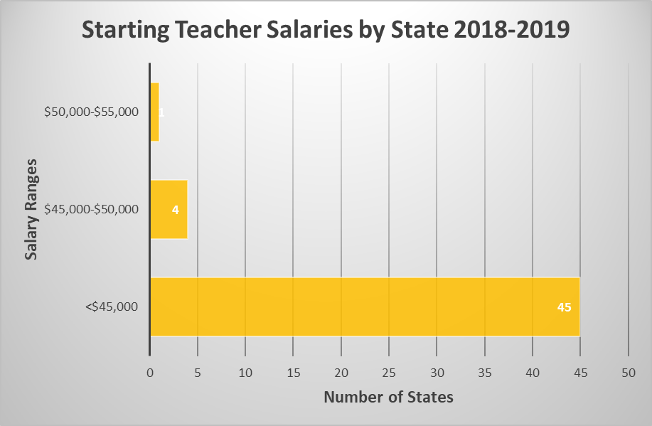
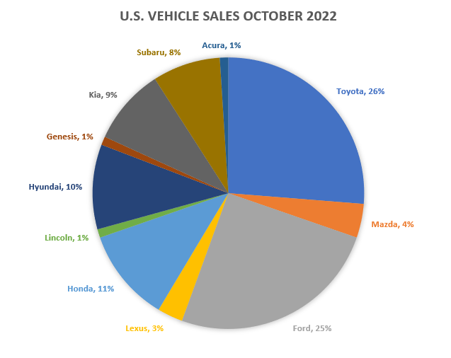
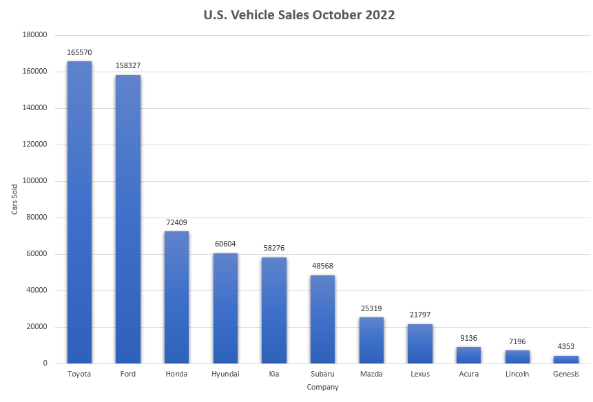

Statistics Unit
2.6 Tables and Graphs
- Create a bar graph showing average teacher salaries.
- Create a bar graph showing starting teacher salaries. You will first need to create a frequency table.
- Create a pie chart showing percentages of each type of vehicle sold in the United States in October 2022.
- Create a bar graph showing vehicles sold in the United States in October 2022.
- Create a time series graph showing the percentage of U.S. population that is foreign-born from 1940 to 2020.
Frequency Table – Average Teacher Salaries by State 2020-2021
| Average Salary | Number of States | Relative Frequency |
|---|---|---|
| <$50,000 | 3 |
6% |
| $50,000 to $55,000 | 17 |
33% |
| $55,000 to $60,000 | 8 |
16% |
| $60,000 to $65,000 | 8 |
16% |
| $65,000 to $70,000 | 3 |
6% |
| >$70,000 | 12 |
24% |
![A bar graph of the average teacher salaries by state. The horizontal axis represents the salary ranges and the vertical axis represents the number of states in each range and goaes from 0 to 25 couning by 5. Ther are 2 states whose average salaries are less than $45,000. There are 15 states whose salaries are $45,000 to $50,000. There are 12 states who salaries are $50,000 to $55,000. There are 7 states whose salaries are $55,000 to $60,000. There are 5 states whose salaries are $60,000 to $65,000. There are 9 states who salaries are greater than $65,000.](images/u2s6p1.png)

Frequency Table – U.S. Vehicle Sales October 2022
| Company | Number Sold | Relative Frequency |
|---|---|---|
| Toyota | 165,570 | 26% |
| Ford | 158,327 | 25% |
| Honda | 72,409 | 11% |
| Hyundai | 60,604 | 10% |
| Kia | 58,276 | 9% |
| Subaru | 48,568 | 8% |
| Mazda | 25,319 | 4% |
| Lexus | 21,797 | 3% |
| Acura | 9,136 | 1% |
| Lincoln | 7,196 | 1% |
| Genesis | 4,353 | 1% |
| Total | 631,555 |
100% |


Time Chart - Percentage of U.S. Population that is Foreign –Born
| Year | Percent Foreign-Born |
|---|---|
| 1940 | 8.8 |
| 1950 | 6.9 |
| 1960 | 5.4 |
| 1970 | 4.7 |
| 1980 | 6.2 |
| 1990 | 8.0 |
| 2000 | 10.4 |
| 2010 | 12.2 |
| 2020 | 13.5 |
![A time series graph for the percentage of the U.S. population that is foreign-born. The horizontal axis represents the years and goes from 1930 to 2030. The vertical axis represents the percentage of the total population and goes from 0 to 14. There are several points plotted and connected on the graph. The points are (1940,8.8), (1950,6.9), (1960,5.4), (1970,4.7), (1980,6.2), (1990,8.0), (2000,10.4), (2010,12.2), and (2020, 13.5). The line decreases from 1940 to 1970 and then increases to the last point at 2020.](images/u2s6p5.png)
Using Excel
Part 1: Teacher Salaries
- Copy and paste the data into a new sheet so you don’t lose the original data.
- Delete any columns you don’t need.
- Select the column
- “delete sheet column.”
- Sort the salary data smallest to largest.
- First highlight the cells you want to sort.
- You can choose to sort A-Z or Z-A.
- Click yes to expand the selection.
- Make a frequency table.
- For average salaries you can use ranges <45000, 45000-50000, 50000-55000, 55000-60000, 60000-65000, >65000
- For starting salaries you can use ranges 25000-30000, 30000-35000, 35000-40000, 40000-45000, 45000-50000
- Create a graph for the number of states in each salary range.
- Highlight the frequency table you made
- Click “insert” a graph
- Label the axes by adding axis titles and give the graph a descriptive title.
- Copy and paste the graph into a Word document. Save your Word document on your H drive or One Drive.
Part 2: Number of States in Each Region
- Copy the original data into another new sheet.
- You may delete all columns except state names and regions.
- Sort the data according to Region.
- Make a frequency table showing the number of states in each region.
- Create a bar graph for the number of states in each region.
- Label the axes and give the bar graph a descriptive title.
- Save your bar graph to your Word document.
Part 3: Percent of States in Each Region
- Make another table showing the percentage of states in each region.
- Create a circle graph for the percentage of states in each region.
- Choose a style for your circle graph so that the percentages are labeled.
- Give a descriptive title to your circle graph.
- Save your circle graph to your Word document.
Part 4: States in Region with Income Tax
- Copy the original data onto another new sheet.
- Delete the first two header rows.
- Insert an empty row above all the data.
- Filter the data so that only the states in the Southeast are showing.
- Highlight the data
- Click “filter.”
- Sort the data according to whether these states have a state income tax.
- Start a table showing the percentage of states in a particular region with an income tax. Record the percentage of Southeast states that have an income tax.
- Clear the filter.
- Filter the data so that only the Northeast states are showing.
- Sort the data according to whether these states have a state income tax.
- Add to your table the percentage of Northeast states with an income tax.
- Continue with the other three regions.
- Create a clustered column graph showing the percentage of states in each region with an income tax. Label axes with titles and give a descriptive title to your graph.
- Save your clustered column graph to your Word document.
Part 5: States in the Region with or without Income Tax
- Copy the original data onto a new sheet.
- Delete the first two header rows
- Delete the salary columns.
- Insert an empty row above all the data.
- Filter the data so that only the Southeast states are showing.
- Sort the income tax column.
- Start a frequency table showing the numbers of Southeast states with and without an income tax.
- Clear the filter. Now filter so that only the Northeast states are showing. Sort the income tax column.
- Add to your frequency table the numbers of Northeast states with and without an income tax.
- Highlight the frequency table and insert a stacked column OR clustered bar graph. Label axes and give a descriptive title.
- Save graph to your Word document.
Extra note:
To edit the axis numbering on a graph, click on your graph. Then from the drop down menu in the upper left corner of Excel, select Vertical (Value) Axis. Click Format Selection right under the drop down menu. In the box that opens on the right side of your screen, click on the picture of the histogram. Then edit the numbers accordingly. You can also edit the Horizontal Axis if needed.